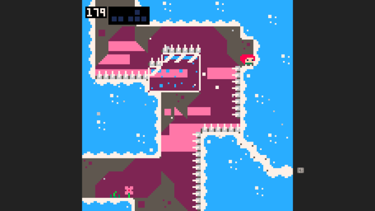
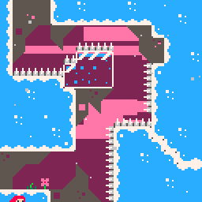

> the sorry to hear that story
by: cribley
cribley was asking how to do gemskip 2400m so he sent a screenshot of where he was at in the room.
image that cribley sent in the celeste classic discord
meep came in to help and explained the strat "you dash left and try to walljump off of the left side of the ice" and then he sent a command that told the celeste bot to send a gif of gemskip 2400m.
2400m gemskip 2 gif. use command "!db 2300 gemskip" in the celeste classic discord to see this gif
meep started explaining how he did the strat "i dash left and smack into the ice, then jump and dash left again". but cribley said he doesn't even do that.

Then meep said "which made it more consistent than just jumping and dashing left". cribley said "I don't do the first part like that". then meep said "sorry to hear that".

now after meep said that it just became a meme and now everyone says it because cribley said something stupid. and whenever someone says it cribley remembers the stupid thing he said.